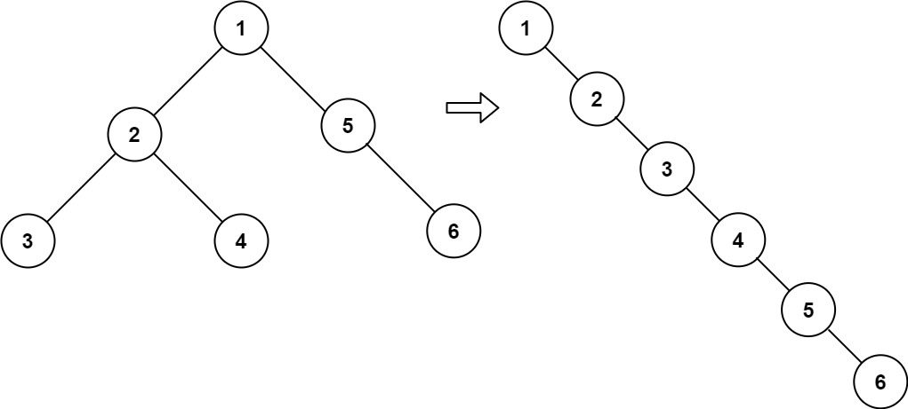

LeetCode Hot100 笔记¶
4. 寻找两个正序数组的中位数¶
给定两个大小分别为 m 和 n 的正序（从小到大）数组 nums1 和 nums2。请你找出并返回这两个正序数组的 中位数 。
算法的时间复杂度应该为 O(log (m+n))
中位数的位置：奇数为中间的数，偶数为中间两个数的平均值
trick：分别找第 (n + 1) / 2, (n + 2) / 2 两个数，求平均值（奇偶均适用）
O(log (m+n)) ：二分查找 O(m+n)：归并排序
double findMedianSortedArrays(vector<int>& nums1, vector<int>& nums2) {
int n = nums1.size() + nums2.size();
int left = get_Kth_value(nums1, 0, nums2, 0, (n + 1) / 2);
int right = get_Kth_value(nums1, 0, nums2, 0, (n + 2) / 2);
return (left + right) / 2.0;
}
int get_Kth_value(const vector<int>& nums1, int i, const vector<int>& nums2, int j, int k)
{
if(i >= nums1.size()) return nums2[j + k - 1]; // nums1空数组
if(j >= nums2.size()) return nums1[i + k - 1]; // nums2空数组
if(k == 1) return min(nums1[i], nums2[j]);
int mid_nums1 = (i + k / 2 - 1 < nums1.size()) ? nums1[i + k / 2 - 1] : INT_MAX;
int mid_nums2 = (j + k / 2 - 1 < nums2.size()) ? nums2[j + k / 2 - 1] : INT_MAX;
if(mid_nums1 < mid_nums2)
return get_Kth_value(nums1, i + k / 2, nums2, j, k - k / 2);
else return get_Kth_value(nums1, i, nums2, j + k / 2, k - k / 2);
}
5. 最长回文子串¶
给你一个字符串 s，找到 s 中最长的回文子串。
如果字符串的反序与原始字符串相同，则该字符串称为回文字符串。
中心扩散法：选定一个中心向两边扩散。
string longestPalindrome(string s) {
int n = s.size();
string res;
for(int i = 0; i < n; ++i)
{
ExtendFromCentor(s, res, i, i); // 子串数目为奇数
ExtendFromCentor(s, res, i, i + 1); // 子串数目为偶数
}
return res;
}
void ExtendFromCentor(const string& s, string& res, int left, int right){
while(left >= 0 && right < s.size() && s[left] == s[right])
{
--left;
++right;
}
if(right - left - 1 > res.size()) res = s.substr(left + 1, right - left -1);
}
10. 正则表达式匹配¶
给你一个字符串 s 和一个字符规律 p，请你来实现一个支持 . 和 * 的正则表达式匹配
. 匹配任意单个字符
* 匹配零个或多个前面的那一个元素
所谓匹配，是要涵盖 整个 字符串 s的，而不是部分字符串
bool isMatch(string s, string p) {
int n_s = s.size(), n_p = p.size();
s = ' ' + s;
p = ' ' + p;
vector<vector<bool>> dp(n_s + 1, vector<bool>(n_p + 1, false));
dp[0][0] = true;
for(int i = 0; i <= n_s; ++i) // s可以为空，p不能为空
{
for(int j = 1; j <= n_p; ++j)
{
if(j + 1 <= n_p && p[j + 1] == '*') continue;
if(p[j] != '*') dp[i][j] = i >= 1 && j >= 1 && dp[i - 1][j - 1] && (p[j] == '.' || s[i] == p[j]);
else dp[i][j] = (j >= 2 && dp[i][j - 2]) || (i >= 1 && dp[i - 1][j] && (p[j - 1] == '.' || s[i] == p[j - 1]));
}
}
return dp[n_s][n_p];
}
11. 盛最多水的容器¶
给定一个长度为 n 的整数数组 height 。有 n 条垂线，第 i 条线的两个端点是 (i, 0) 和 (i, height[i]) 。
找出其中的两条线，使得它们与 x 轴共同构成的容器可以容纳最多的水。
返回容器可以储存的最大水量。
示例：
输入：[1,8,6,2,5,4,8,3,7] 输出：49 解释：图中垂直线代表输入数组 [1,8,6,2,5,4,8,3,7]。在此情况下，容器能够容纳水（表示为蓝色部分）的最大值为 49。
双指针：
指针 i，j 分别指向两端，容器面积由短板决定，res = min(h[i] , h[j]) * (j - i) 若移动短板，容器的短板可能变大，则容器的面积可能会变大 若移动长板，容器的短板不变或变小，则容器的面积一定减小 因此，每次移动短板，求的移动过程中容器的最大值
int maxArea(vector<int>& height) {
int n = height.size();
int left = 0, right = n - 1, res = 0;
while(left < right)
{
res = max(min(height[left], height[right]) * (right - left), res);
if(height[left] < height[right]) ++left;
else --right;
}
return res;
}
class Solution {
public int maxArea(int[] height) {
int n = height.length, left = 0, right = n - 1, res = 0;
while(left < right) {
res = Math.max(res, Math.min(height[left], height[right]) * (right - left));
if(height[left] < height[right]) ++left;
else --right;
}
return res;
}
}
15. 三数之和¶
给你一个整数数组 nums ，判断是否存在三元组 [nums[i], nums[j], nums[k]] 满足 i != j、i != k 且 j != k ，同时还满足 nums[i] + nums[j] + nums[k] == 0 。请
你返回所有和为 0 且不重复的三元组。
注意：答案中不可以包含重复的三元组。
vector<vector<int>> threeSum(vector<int>& nums) {
int n = nums.size();
sort(nums.begin(), nums.end());
vector<vector<int>> ret;
for(int i = 0; i < n - 2; ++i){
if(nums[i] > 0) break;
if(i >= 1 && nums[i] == nums[i - 1]) continue;
int j = i + 1, k = n - 1;
while(j < k){
int sum = nums[i] + nums[j] + nums[k];
if(sum == 0){
ret.push_back({nums[i], nums[j], nums[k]});
while(j < k && nums[j] == nums[j + 1]) ++j;
while(j < k && nums[k] == nums[k - 1]) --k;
++j;
--k;
}
else if(sum < 0) ++j;
else --k;
}
}
return ret;
}
22. 括号生成¶
数字 n 代表生成括号的对数，请你设计一个函数，用于能够生成所有可能的并且 有效的 括号组合。
通过回溯的方法来模拟每次生成的是左括号还是右括号
通过一个堆栈st来判断生成的括号是否有效，当存在一个相匹配的左右括号时，从堆栈中弹出该对括号，若最终生成的括号有效，则堆栈为空
vector<string> generateParenthesis(int n) {
vector<string> res;
string path = "";
stack<char> st;
backtracking(n, res, path, st);
return res;
}
void backtracking(int n, vector<string>& res, string& path, stack<char>& st)
{
if(path.size() == 2 * n)
{
if(st.empty()) res.push_back(path);
return;
}
path.push_back('(');
st.push('(');
backtracking(n, res, path, st);
st.pop();
path.pop_back();
if(!st.empty() && st.top() == '(')
{
path.push_back(')');
st.pop();
backtracking(n, res, path, st);
st.push('(');
path.pop_back();
}
}
23. 合并 K 个升序链表¶
给你一个链表数组，每个链表都已经按升序排列。
请你将所有链表合并到一个升序链表中，返回合并后的链表。
使用优先队列priority_queue来判断K个链表中的最小值
ListNode* mergeKLists(vector<ListNode*>& lists) {
int n = lists.size();
if(lists.size() == 0) return nullptr;
priority_queue<ListNode*, vector<ListNode*>, cmp> que;
ListNode* dummyhead = new ListNode();
ListNode* cur = dummyhead;
for(int i = 0; i < n; ++i)
{
if(lists[i] != nullptr) que.push(lists[i]);
}
while(!que.empty())
{
ListNode* temp = que.top();
que.pop();
cur->next = temp;
cur = cur->next;
if(temp->next != nullptr) que.push(temp->next);
}
return dummyhead->next;
}
class cmp{
public:
bool operator()(ListNode* a, ListNode* b)
{
return a->val > b->val;
}
};
31. 下一个排列¶
整数数组的一个 排列 就是将其所有成员以序列或线性顺序排列。
- 例如，
arr = [1,2,3]，以下这些都可以视作arr的排列：[1,2,3]、[1,3,2]、[3,1,2]、[2,3,1]。
整数数组的 下一个排列 是指其整数的下一个字典序更大的排列。更正式地，如果数组的所有排列根据其字典顺序从小到大排列在一个容器中，那么数组的 下一个排列 就是在这个有序容器中排在它后面的那个排列。如果不存在下一个更大的排列，那么这个数组必须重排为字典序最小的排列（即，其元素按升序排列）。
- 例如，
arr = [1,2,3]的下一个排列是[1,3,2]。 - 类似地，
arr = [2,3,1]的下一个排列是[3,1,2]。 - 而
arr = [3,2,1]的下一个排列是[1,2,3]，因为[3,2,1]不存在一个字典序更大的排列。
给你一个整数数组 nums ，找出 nums 的下一个排列。
void nextPermutation(vector<int>& nums) {
int n = nums.size(), i = n - 2;
while(i >= 0 && nums[i] >= nums[i + 1]) --i;
if(i >= 0)
{
int j = n - 1;
while(j >= 0 && nums[j] <= nums[i]) --j;
swap(nums[i], nums[j]);
}
reverse(nums, i + 1, n - 1);
}
void reverse(vector<int>& nums, int left, int right)
{
while(left < right)
{
swap(nums[left], nums[right]);
++left;
--right;
}
}
32 最长有效括号¶
给你一个只包含 '(' 和 ')' 的字符串，找出最长有效（格式正确且连续）括号子串的长度。
方法1: 动态规划
dp[i]: 以s[i]结尾的字符串s的最长有效括号的长度，因此只要当s[i]为）时才有效
当s[i - 1] 为（时，dp[i] = dp[i - 2] + 2
当s[i - 1] 为）时，则s为dp[i - 2 - dp[i - 1]], _, dp[i - 1], s[i]的形式，判断 _ 处是否为（，则
dp[i] = dp[i - 1] + 2 + dp[i - 2 - dp[i - 1]]
方法2: 栈
构建一个栈，存放s中字符的下标，栈顶元素为最后一个没有匹配的右括号的下标，预先入栈 -1
当s[i]为（时入栈，push下标
当s[i]为）时，弹出栈顶元素，判断栈是否为空
当栈为空时，说明该）没有与之匹配的（，将该）的下标入栈
当栈不为空时，计算res = i - st.top()
// method 1 动态规划
int longestValidParentheses(string s) {
int n = s.size(), res = 0;
if(n == 0 || n == 1) return res;
vector<int> dp(n); // dp[i]:以s[i]结尾的字符串s的最长有效括号的长度
dp[0] = 0;
for(int i = 1; i < n; ++i){
if(s[i] == ')'){
if(s[i - 1] == '(') dp[i] = ((i - 2) >= 0 ? dp[i - 2] : 0 ) + 2;
else if((i - 1 - dp[i - 1]) >= 0 && s[i - 1 - dp[i - 1]] == '(')
dp[i] = dp[i - 1] + 2 + ((i - 2 - dp[i - 1]) >= 0 ? dp[i - 2 - dp[i - 1]] : 0);
}
res = max(res, dp[i]);
}
return res;
}
// method 2 栈
int longestValidParentheses(string s) {
int n = s.size(), res = 0;
if(n == 0 || n == 1) return res;
stack<int> st;
st.push(-1);
for(int i = 0; i < n; ++i){
if(s[i] == '(') st.push(i);
else{
st.pop();
if(st.empty()) st.push(i);
else res = max(res, i - st.top());
}
}
return res;
}
33 搜索旋转排序数组¶
整数数组 nums 按升序排列，数组中的值 互不相同 。
在传递给函数之前，nums 在预先未知的某个下标 k（0 <= k < nums.length）上进行了 旋转，使数组变为[nums[k], nums[k+1], ..., nums[n-1], nums[0], nums[1], ..., nums[k-1]]（下标 从 0 开始 计数）。
例如， [0,1,2,4,5,6,7] 在下标 3 处经旋转后可能变为 [4,5,6,7,0,1,2] 。
给你 旋转后 的数组 nums 和一个整数 target ，如果 nums 中存在这个目标值 target ，则返回它的下标，否则返回 -1 。
你必须设计一个时间复杂度为 O(log n) 的算法解决此问题。
O(log n) 应该使用二分查找
nums ： 4，5，6，7，｜0，1，2 分为左右两边
当mid在左边时：
target < nums[mid] 时，right = mid - 1
其余情况，left = mid + 1
当mid在右边时：
target > nums[mid]时，left = mid + 1
其余情况，right = mid - 1
// 二分查找
int search(vector<int>& nums, int target){
int n = nums.size();
int left = 0, right = n - 1;
while(left <= right){
int mid = left + (right - left) / 2;
if(nums[mid] == target) return mid;
else if(nums[mid] >= nums[0]){
if(nums[0] <= target && target < nums[mid]) right = mid - 1;
else left = mid + 1;
}
else{
if(nums[mid] < target && target < nums[0]) left = mid + 1;
else right = mid - 1;
}
}
return -1;
}
34 在排序数组中查找元素的第一个和最后一个位置¶
给你一个按照非递减顺序排列的整数数组 nums，和一个目标值 target。请你找出给定目标值在数组中的开始位置和结束位置。
如果数组中不存在目标值 target，返回 [-1, -1]。
通过二分查找来查找第一个和最后一个
设置一个标志flag，为true时查找第一个，为false时查找最后一个
vector<int> searchRange(vector<int>& nums, int target) {
int n = nums.size();
if(n == 0 || nums[0] > target || nums[n - 1] < target) return {-1, -1};
return {binarySearch(nums, target, true), binarySearch(nums, target, false)};
}
// flag = true : 查找第一个
// flag = false : 查找最后一个
int binarySearch(vector<int>& nums, int target, bool flag){
int n = nums.size(), left = 0, right = n - 1;
while(left <= right){
int mid = left + (right - left) / 2;
if(nums[mid] > target) right = mid - 1;
else if(nums[mid] < target) left = mid + 1;
else{
if(flag){
if(mid == 0 || nums[mid - 1] != nums[mid]) return mid;
else right = mid - 1;
}
else{
if(mid == n - 1 || nums[mid + 1] != nums[mid]) return mid;
else left = mid + 1;
}
}
}
return -1;
}
42 接雨水¶
给定 n 个非负整数表示每个宽度为 1 的柱子的高度图，计算按此排列的柱子，下雨之后能接多少雨水。
单调栈：
当存在雨水时，需确定雨水的左右两柱子的最小高度，和两柱子之间的距离 - 当前高度小于等于栈顶高度，入栈，指针后移 - 当前高度大于栈顶高度： - 栈顶高度出栈，作为水槽的底heightBase - 需确认heightBase左右两柱子高度的最小值 - 当新栈顶为空时，表明不存在左柱子，水槽为空，退出 - 否则，计算当前高度与新栈顶高度的最小值，作为水槽的高heightMin，计算当前指针与新栈顶指针的差值，作为水槽的宽distance，水槽的面积 = distance * (heightMin - heightBase)，更新结果res - 重复上一过程，否则当前高度入栈，指针后移
int trap(vector<int>& height) {
int n = height.size(), res = 0;
stack<int> st;
for(int i = 0; i < n; ++i){
while(!st.empty() && height[i] > height[st.top()]){
int heightBase = height[st.top()];
st.pop();
if(st.empty()) break;
int heightMin = min(height[st.top()], height[i]);
int distance = i - st.top() - 1;
res += distance * (heightBase - heightMin);
}
st.push(i);
}
return res;
}
class Solution {
public int trap(int[] height) {
int n = height.length, res = 0;
Stack<Integer> st = new Stack<>();
for(int i = 0; i < n; ++i) {
while(!st.isEmpty() && height[i] > height[st.peek()]) {
int baseHeight = height[st.peek()];
st.pop();
if(st.isEmpty()) break;
int minHeight = Math.min(height[i], height[st.peek()]);
res += (minHeight - baseHeight) * (i - st.peek() - 1);
}
st.push(i);
}
return res;
}
}
45 跳跃游戏二¶
55 跳跃游戏¶
72 编辑距离¶
给你两个单词 word1 和 word2， 请返回将 word1 转换成 word2 所使用的最少操作数 。
你可以对一个单词进行如下三种操作：插入一个字符、删除一个字符、替换一个字符
动态规划
dp[i] [j] : word1的前i个字符转换成word2前j个字符所需的最小操作数
- 当word1[i - 1] == word2[j - 1]时：
- 不需要进行操作，dp[i] [j] = dp[i - 1] [j - 1]
- 当word1[i - 1] == word2[j - 1]时：
- 存在三种操作使得最后一个字符相同：插入、删除、替换，取三种操作的最小值来更新dp[i] [j]
- 插入：dp[i] [j - 1]
- 删除：dp[i - 1] [j]
- 替换：dp[i - 1] [j - 1]
int minDistance(string word1, string word2) {
int n1 = word1.size(), n2 = word2.size();
if(n1 == 0 || n2 == 0) return max(n1, n2);
vector<vector<int>> dp(n1 + 1, vector<int>(n2 + 1)); // dp[i][j]: word1的前i个字符转换成word2前j个字符所需的最小操作数
for(int i = 0; i <= n1; ++i) dp[i][0] = i;
for(int j = 0; j <= n2; ++j) dp[0][j] = j;
for(int i = 1; i <= n1; ++i){
for(int j = 1; j <= n2; ++j){
if(word1[i - 1] == word2[j - 1]) dp[i][j] = dp[i - 1][j - 1];
else dp[i][j] = min({dp[i][j - 1], dp[i - 1][j], dp[i - 1][j - 1]}) + 1;
}
}
return dp[n1][n2];
}
75 颜色分类¶
给定一个包含红色、白色和蓝色、共 n 个元素的数组 nums ，原地对它们进行排序，使得相同颜色的元素相邻，并按照红色、白色、蓝色顺序排列。
我们使用整数 0、 1 和 2 分别表示红色、白色和蓝色。
必须在不使用库内置的 sort 函数的情况下解决这个问题。
双指针：left（1区间的左边）、right（1区间的右边）
- nums[i] == 0
- 交换 i 和 left，left右移，i++
- nums[i] == 1
- i++
- nums[i] == 2
- 交换 i 和 right，right左移
void sortColors(vector<int>& nums) {
int n = nums.size();
int i = 0, left = 0, right = n - 1;
while(i < right){
if(nums[i] == 0){
swap(nums[left],nums[i]);
++left;
++i;
}
else if(nums[i] == 1) ++i;
else{
swap(nums[i], nums[right]);
--right;
}
}
}
76 最小覆盖子串¶
给你一个字符串 s 、一个字符串 t 。返回 s 中涵盖 t 所有字符的最小子串。如果 s 中不存在涵盖 t 所有字符的子串，则返回空字符串 "" 。
示例：
输入：s = "ADOBECODEBANC", t = "ABC" 输出："BANC" 解释：最小覆盖子串 "BANC" 包含来自字符串 t 的 'A'、'B' 和 'C'。
思路：滑动窗口
string minWindow(string s, string t) {
int n_s = s.size(), n_t = t.size();
vector<int> need(128);
for(int i = 0; i < n_t; ++i) ++need[t[i]];
int left = 0, right = 0, lenght = INT_MAX, start = 0, count = 0;
while(right < n_s){
if(need[s[right]] > 0) ++count;
--need[s[right]];
if(count == n_t){
while(left < right && need[s[left]] < 0){
++need[s[left]];
++left;
}
if(right - left + 1 < lenght){
start = left;
lenght = right - left + 1;
}
++need[s[left]];
++left;
--count;
}
++right;
}
return lenght == INT_MAX ? "" : s.substr(start, lenght);
}
class Solution {
public String minWindow(String s, String t) {
if(s.length() < t.length()) return new String();
int m = s.length(), n = t.length(), resPos = 0, resSize = Integer.MAX_VALUE, count = 0;
int[] hash = new int[128];
for(int i = 0; i < n; ++i) {
++hash[t.charAt(i)];
}
for(int left = 0, right = 0; right < m; ++right) {
if(hash[s.charAt(right)] > 0) ++count;
--hash[s.charAt(right)];
if(count == n) {
while(left < right && hash[s.charAt(left)] < 0) {
++hash[s.charAt(left)];
++left;
}
if(right - left + 1 < resSize) {
resPos = left;
resSize = right - left + 1;
}
++hash[s.charAt(left)];
++left;
--count;
}
}
return s.substring(resPos, resSize == Integer.MAX_VALUE ? 0 : resPos + resSize);
}
}
96 不同的二叉搜索树¶
给你一个整数 n ，求恰由 n 个节点组成且节点值从 1 到 n 互不相同的 二叉搜索树有多少种？返回满足题意的二叉搜索树的种数。
G(n): 由n个节点组成的二叉搜索树的个数
f(i): 以i为根结点的二叉搜索树的个数，其左子树节点个数i - 1，右子树节点个数n - i，则f(i) = G(i - 1) * G(n - i)
则G(n) = f(1) + f(2) + ... + f(n) = G(0) * G(n - 1) + G(1) * G(n - 2) + ... + G(n - 1) * G(0)
int numTrees(int n){
vector<int> dp(n + 1);
dp[0] = 1;
for(int i = 1; i <= n; ++i){
for(int j = 1; j <= i; ++j){
dp[i] += dp[j - 1] * dp[i - j];
}
}
return dp[n];
}
98 验证二叉搜索树¶
给你一个二叉树的根节点 root ，判断其是否是一个有效的二叉搜索树。
有效 二叉搜索树定义如下：
- 节点的左子树只包含 小于 当前节点的数。
- 节点的右子树只包含 大于 当前节点的数。
- 所有左子树和右子树自身必须也是二叉搜索树。
二叉搜索树满足左子树的所有节点小于根结点，右子树的所有值大于根结点
即二叉搜索树的中序遍历是递增的
对二叉树进行中序遍历，使用pre来保存前一个节点的值，若当前节点<=pre，返回false
long long pre = INT64_MIN;
bool isValidBST(TreeNode* root){
if(root == nullptr) return true;
if(!isValidBST(root->left)) return false;
if(pre >= root->val) return false;
pre = root->val;
return isValidBST(root->right);
}
105 从前序与中序遍历序列构造二叉树¶
给定两个整数数组 preorder 和 inorder ，其中 preorder 是二叉树的先序遍历， inorder 是同一棵树的中序遍历，请构造二叉树并返回其根节点。
前序遍历：根左右
中序遍历：左右根
- 前序遍历的头节点为根节点，在中序遍历中找到根节点的索引，则其左右分别为左右子树
- 每次不必对遍历序列进行分别，可设定左右指针作为序列的有效范围
TreeNode* buildTree(vector<int>& preorder, vector<int>& inorder){
int n = preorder.size();
if(n == 0) return nullptr;
unordered_map<int, int> map;
for(int i = 0; i < n; ++i){
map[inorder[i]] = i;
}
return backtracking(preorder, 0, n - 1, inorder, 0, n - 1, map);
}
TreeNode* backtracking(const vector<int>& preorder, int preLeft, int preRight, const vector<int>& inorder, int inLeft, int inRight, unordered_map<int, int>& map){
if(preLeft > preRight) return nullptr;
int rootValue = preorder[preLeft];
int rootIndex = map[rootValue];
TreeNode* root = new TreeNode(rootValue);
root->left = backtracking(preorder, preLeft + 1, preLeft + rootIndex - inLeft, inorder, inLeft, rootValue - 1, map);
root->right = backtracking(preorder, preLeft + rootIndex - inLeft + 1, preRight, inorder, rootIndex + 1, inRight, map);
return root;
}
114 二叉树展开为链表¶
给你二叉树的根结点 root ，请你将它展开为一个单链表：
- 展开后的单链表应该同样使用
TreeNode，其中right子指针指向链表中下一个结点，而左子指针始终为null。 - 展开后的单链表应该与二叉树 先序遍历 顺序相同。

分别将左右子树进行展开，左节点为空，右节点指向左子树，左子树的末尾右节点指向右子树
void flatten(TreeNode* root) {
if(root == nullptr) return;
TreeNode* leftChildTree = root->left;
TreeNode* rightChildTree = root->right;
flatten(leftChildTree);
flatten(rightChildTree);
if(leftChildTree == nullptr) return;
root->left = nullptr;
root->right = leftChildTree;
TreeNode* cur = leftChildTree;
while(cur->right != nullptr){
cur = cur->right;
}
cur->right = rightChildTree;
}
124 二叉树的最大路径和¶
128 最长连续序列¶
给定一个未排序的整数数组 nums ，找出数字连续的最长序列（不要求序列元素在原数组中连续）的长度。
请你设计并实现时间复杂度为 O(n) 的算法解决此问题。
示例 1：
输入：nums = [100,4,200,1,3,2] 输出：4 解释：最长数字连续序列是 [1, 2, 3, 4]。它的长度为 4。
示例 2：
输入：nums = [0,3,7,2,5,8,4,6,0,1] 输出：9
提示：
0 <= nums.length <= 105 -109 <= nums[i] <= 109
解析：
时间复杂度要求为 O(n)，不能使用排序，考虑哈希表 将所有元素加入哈希表，遍历数组，找到序列的起始元素，计算该序列的长度
class Solution {
public int longestConsecutive(int[] nums) {
if(nums.length == 0) return 0;
Set<Integer> set = new HashSet<>();
for(int num : nums) {
set.add(num);
}
int res = 0;
for(int num : nums) {
if(!set.contains(num - 1)) {
int end = num + 1;
while(set.contains(end)) {
++end;
}
res = Math.max(res, end - num);
}
}
return res;
}
}
139 单词拆分¶
146 LRU缓存¶
148 排序链表¶
207 课程表¶
208 实现Trie（前缀树）¶
215 数组中的第K个最大元素¶
221 最大正方形¶
234 回文链表¶
给你一个单链表的头节点 head ，请你判断该链表是否为回文链表。如果是，返回 true ；否则，返回 false 。
// 递归
class Solution {
private ListNode frontNode;
public boolean isPalindrome(ListNode head) {
frontNode = head;
return backtracking(head);
}
private boolean backtracking(ListNode cur) {
if(cur == null) return true;
if(backtracking(cur.next) && cur.val == frontNode.val) {
frontNode = frontNode.next;
return true;
}
return false;
}
}
// 反转链表
class Solution {
public boolean isPalindrome(ListNode head) {
ListNode fast = head, slow = head;
while(fast != null && fast.next != null) {
fast = fast.next.next;
slow = slow.next;
}
if(fast != null) slow = slow.next;
slow = reverse(slow);
fast = head;
while(slow != null) {
if(fast.val != slow.val) return false;
fast = fast.next;
slow = slow.next;
}
return true;
}
private ListNode reverse(ListNode head) {
if(head == null) return null;
ListNode pre = null, cur = head;
while(cur != null) {
ListNode nextNode = cur.next;
cur.next = pre;
pre = cur;
cur = nextNode;
}
return pre;
}
}
239 滑动窗口最大值¶
给你一个整数数组 nums，有一个大小为 k 的滑动窗口从数组的最左侧移动到数组的最右侧。你只可以看到在滑动窗口内的 k 个数字。滑动窗口每次只向右移动一位。
返回 滑动窗口中的最大值 。
示例 1：
输入：nums = [1,3,-1,-3,5,3,6,7], k = 3 输出：[3,3,5,5,6,7]
示例 2：
输入：nums = [1], k = 1 输出：[1]
提示：
1 <= nums.length <= 105 -104 <= nums[i] <= 104 1 <= k <= nums.length
思路：优先队列
class Solution {
public int[] maxSlidingWindow(int[] nums, int k) {
PriorityQueue<int[]> pq = new PriorityQueue<int[]>(new Comparator<int[]>() {
public int compare(int[] pair1, int[] pair2) {
return pair1[0] != pair2[0] ? pair2[0] - pair1[0] : pair2[1] - pair1[1];
}
});
int n = nums.length;
int[] res = new int[n - k + 1];
for(int i = 0; i < k; ++i) {
pq.offer(new int[]{nums[i], i});
}
res[0] = pq.peek()[0];
for(int i = k; i < n; ++i) {
pq.offer(new int[]{nums[i], i});
while(pq.peek()[1] <= i - k) {
pq.poll();
}
res[i - k + 1] = pq.peek()[0];
}
return res;
}
}
253 会议室Ⅱ¶
279 完全平方数¶
283 移动零¶
438 找到字符串中所有字母异位词¶
给定两个字符串 s 和 p，找到 s 中所有 p 的 异位词 的子串，返回这些子串的起始索引。不考虑答案输出的顺序。
异位词 指由相同字母重排列形成的字符串（包括相同的字符串）。
示例 1:
输入: s = "cbaebabacd", p = "abc" 输出: [0,6] 解释: 起始索引等于 0 的子串是 "cba", 它是 "abc" 的异位词。 起始索引等于 6 的子串是 "bac", 它是 "abc" 的异位词。
示例 2:
输入: s = "abab", p = "ab" 输出: [0,1,2] 解释: 起始索引等于 0 的子串是 "ab", 它是 "ab" 的异位词。 起始索引等于 1 的子串是 "ba", 它是 "ab" 的异位词。 起始索引等于 2 的子串是 "ab", 它是 "ab" 的异位词。
提示:
1 <= s.length, p.length <= 3 * 104 s 和 p 仅包含小写字母
class Solution {
public List<Integer> findAnagrams(String s, String p) {
List<Integer> res = new ArrayList<>();
if(s.length() < p.length()) return res;
int ns = s.length(), np = p.length();
int[] hash = new int[26];
int[] temp = new int[26];
for(int i = 0; i < np; ++i) {
++hash[p.charAt(i) - 'a'];
++temp[s.charAt(i) - 'a'];
}
if(Arrays.equals(hash, temp)) res.add(0);
int left = 1, right = np;
while(right < ns) {
--temp[s.charAt(left - 1) - 'a'];
++temp[s.charAt(right) - 'a'];
if(Arrays.equals(hash, temp)) res.add(left);
++left;
++right;
}
return res;
}
}
560 和为 k 的子数组¶
给你一个整数数组 nums 和一个整数 k ，请你统计并返回 该数组中和为 k 的子数组的个数 。
子数组是数组中元素的连续非空序列。
示例 1：
输入：nums = [1,1,1], k = 2 输出：2
示例 2：
输入：nums = [1,2,3], k = 3 输出：2
提示：
1 <= nums.length <= 2 * 104 -1000 <= nums[i] <= 1000 -107 <= k <= 107
思路：前缀和
class Solution {
public int subarraySum(int[] nums, int k) {
int n = nums.length, sum = 0, res = 0;
Map<Integer, Integer> map = new HashMap<>();
map.put(0, 1);
for(int i = 0; i < n; ++i) {
sum += nums[i];
if(map.containsKey(sum - k)) res += map.get(sum - k);
map.put(sum, map.getOrDefault(sum, 0) + 1);
}
return res;
}
}